Moments
Small events left to finish, with one long hold.
The operator’s theoremMake a brief ordinary event feel complete enough to matter, then let its duration change the viewer's attention to the next event. The unit is a beginning, small change and aftermath, not a picturesque fragment.
critic: inconclusive
53 s · 3,384 KB · found footage from movingimagearchive.com · source ledger
How it was made
- Forage10 shots from the notes appear below; 8 reached the cut.
- Choose8 source shots from 8 films, chosen from frames and sound levels.
- Cut10 shots over 53 s, edit list 698d75e04717.
- Render640×480 at 24 fps, 3,384 KB, with a ledger of every source and transform.
- CriticInconclusive
- RepairOpen
The cut, shot by shot
Each frame below was taken from the middle of the shot in the finished film. The last column is the reason recorded in the edit list for putting it there. Times are in this film; “source film at” is where the shot sits in the original.
| Frame | In | Source | Why it is here |
|---|---|---|---|
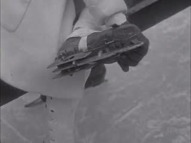 | 0:00.0 8.6 s | Winter in Den haag / IJs in Den Haag (1922) · source film at 0:55.7 · cover · muted | E1 RESISTANCE (sleeve/handle substitute): a strapped wooden skate on ice; a hand works the strap; the shod foot set back down. Source has no sound track |
| 0:08.6 3.5 s | Welding Operator, The (1942) · source film at 0:27.6 · cover · muted | E2 WATER (cup-edge substitute): fingers hover over a beaker, drop something in, water clouds and churns. Narration muted | |
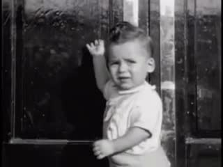 | 0:12.1 5.0 s | [Amateur films: Ivan Besse collection: Britton, South Dakota 1938-39] (Part I) (1938) · source film at 1:30.5 · cover · source sound | E3 LATCH (wait-for-click substitute): a toddler reaches up and pats a closed door, turns, waits; nothing opens. Source silent (hiss kept) |
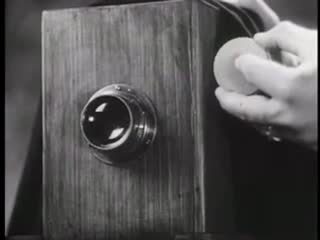 | 0:17.1 10.9 s | Key to Our Horizons (1952) · source film at 0:50.6 · cover · muted | E4 KEY / LONG HOLD: a hand holds a round knob beside a fixture for ~8 s, then fits it in and withdraws; the knob stays. Narration muted |
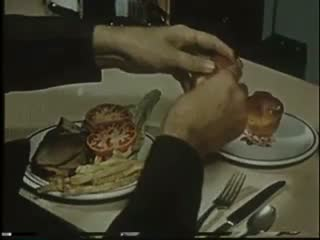 | 0:28.0 4.0 s | Best Food In Town (undated) · source film at 12:28.8 · cover · source sound -2 dB | E5a hands break a roll at a set table; low source room/music bed (pre-narration) kept |
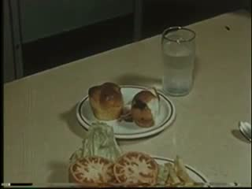 | 0:32.0 3.0 s | Best Food In Town (undated) · source film at 12:34.8 · cover · muted | E5b aftermath: same table, hands gone, glass and rolls (source's own next shot). Narration muted |
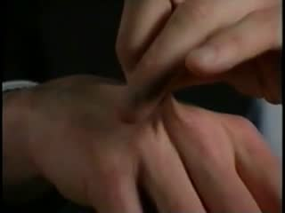 | 0:35.0 3.4 s | Hydration (2004) · source film at 22:03.9 · cover · muted | E6 SETTLING (cloth substitute): a fold of skin pinched, held, released; it settles back slowly. Narration muted |
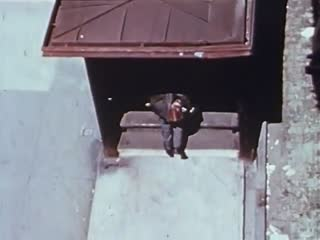 | 0:38.4 3.2 s | Third Avenue El (undated) · source film at 0:55.3 · cover · muted | E7 a man crosses a pavement seen from above and passes under a roof; the pavement remains. Source music muted |
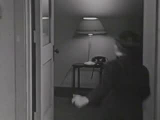 | 0:41.6 6.9 s | Door to Heaven, The (1941) · source film at 3:55.5 · cover · muted | E8 EMPTY SPACE: a girl waves from a doorway and leaves; a man crosses; the lamp-lit room holds after both have gone. Dialogue muted |
| 0:48.5 1.3 s | Welding Operator, The (1942) · source film at 0:29.5 · cover · source sound | E9 RETURN: the beaker again, its event over; source hum between narration phrases kept | |
| 0:49.8 3.0 s | Sources: movingimagearchive.com · see ledger | source card |
Comparison and alternate cuts
2477 KB
What was found, and what was not
The sheets the film-maker worked from

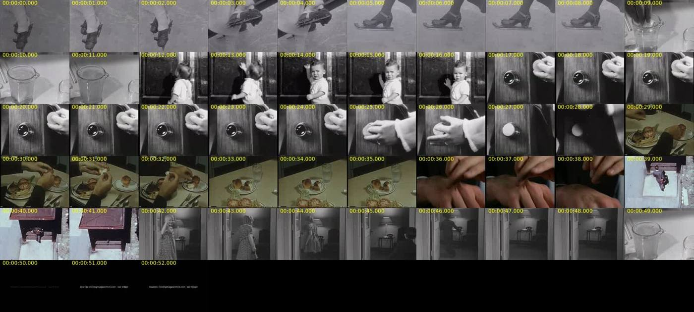

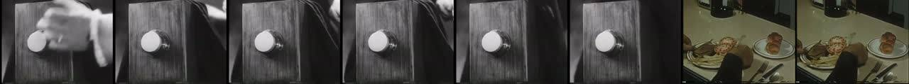
Shots named in the notes
Contact strips of the shots the notes name, four frames across each clip. Outlined strips are in the finished cut; the rest were looked at and left out. The sentence under each is the note written when it was considered.
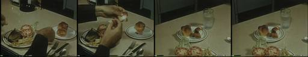
0e86363aHand-scale events with a visible before and after: 7102b861 Key to Our Horizons (1952), a hand holds a round knob beside a fixture for about 8 s before fitting it. 222b8362 The Welding Operator (1942), fingers drop something into a beaker of water. 0e86363a Best Food In Town, hands break a roll, the
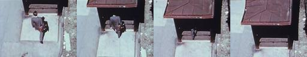
14c8b94bLeaving and emptiness: 6a336c56 The Door to Heaven (1941), a girl waves from a doorway and leaves, a man crosses, the lamp-lit room holds. 14c8b94b Third Avenue El, a man seen from above walks under a roof and the pavement stays empty.

1570ec0bHand-scale events with a visible before and after: 7102b861 Key to Our Horizons (1952), a hand holds a round knob beside a fixture for about 8 s before fitting it. 222b8362 The Welding Operator (1942), fingers drop something into a beaker of water. 0e86363a Best Food In Town, hands break a roll, the
222b8362Hand-scale events with a visible before and after: 7102b861 Key to Our Horizons (1952), a hand holds a round knob beside a fixture for about 8 s before fitting it. 222b8362 The Welding Operator (1942), fingers drop something into a beaker of water. 0e86363a Best Food In Town, hands break a roll, the
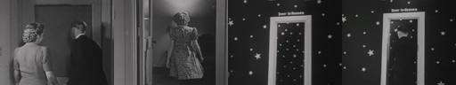
6a336c56Leaving and emptiness: 6a336c56 The Door to Heaven (1941), a girl waves from a doorway and leaves, a man crosses, the lamp-lit room holds. 14c8b94b Third Avenue El, a man seen from above walks under a roof and the pavement stays empty.

7102b861Hand-scale events with a visible before and after: 7102b861 Key to Our Horizons (1952), a hand holds a round knob beside a fixture for about 8 s before fitting it. 222b8362 The Welding Operator (1942), fingers drop something into a beaker of water. 0e86363a Best Food In Town, hands break a roll, the
cd47717fWaiting: cd47717f Ivan Besse amateur film (1938), a toddler pats a closed door, turns and waits.
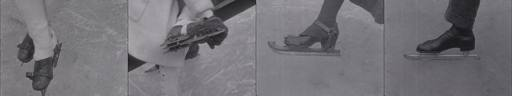
f1c85218Hand-scale events with a visible before and after: 7102b861 Key to Our Horizons (1952), a hand holds a round knob beside a fixture for about 8 s before fitting it. 222b8362 The Welding Operator (1942), fingers drop something into a beaker of water. 0e86363a Best Food In Town, hands break a roll, the

30fe8bbcAlso seen, not used: Valley Town (1940) df82dd90, a man wiping an empty plate with bread (strong, but it brings the film's unemployment drama with it); Two Pay Days (1927) calendar page; Speech: Platform Posture (1949) feet shifting weight; Court to Court (2001) a corridor where a figure walks away;
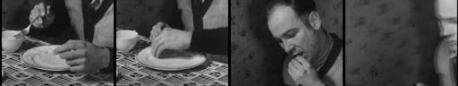
df82dd90Also seen, not used: Valley Town (1940) df82dd90, a man wiping an empty plate with bread (strong, but it brings the film's unemployment drama with it); Two Pay Days (1927) calendar page; Speech: Platform Posture (1949) feet shifting weight; Court to Court (2001) a corridor where a figure walks away;
The whole local archive of 405 sound clips is in the atlas.
Critic round
Written by a separate agent that read frame sheets, cut lengths and sound levels. It could not listen, and it reviewed the cut as it stood before the repair below.
057 Moments: Micro-event attention. INCONCLUSIVE
- Observations
- 0–8.4 is three near-static inserts of skates on ice. A full-resolution check found no legible change. The film opens on an inventory of picturesque fragments, which is exactly what the theorem rules out.
- Real micro-events, each with a beginning, change and aftermath:
- 8.5–12: a hand drops a tablet into a beaker and the water clouds.
- 12–17: a toddler pushes a door, turns, and holds an aftermath stare at the camera, 14–17.
- 35–38.4: a pinch of skin is released and slowly recovers.
- 41.6–48.5: a girl and then a boy leave through a doorway, and the empty lamp-lit room is held 46.25–48.5. This is the one aftermath that feels necessary.
- Doorknob, 17–28: about 8 s of a motionless hand, then a wipe at 25.25–26.5 reveals a gleaming knob, held for only 1.25 s.
- The deliberate long hold comes before the change. It builds anticipation, but it is not a held aftermath.
- The return to the beaker (48.5–49.75) does call up the first event, but only for 1.25 s, and it fades out.
- Sound is almost absent: digital silence except −55 dB hiss under the toddler, about −45 dB under the bread, and about −40 dB under the beaker return.
- Oddly, the first beaker event (8.5–12) is silent while its return has sound.
- Largest gap: The opening 8.4 s teaches the wrong unit. It is a fragment, not an event. Because of that, the 8 s knob hold reads as more stillness instead of attention that has been sharpened.
- Repair (falsifiable): Remove the skates (0–8.4) so the film opens on the tablet drop.
- Prediction: viewers asked "what changed in the first shot?" all answer, and during the knob hold they say they were waiting for something to happen, not that it was "slow".
- Strength to protect: the empty-room hold at 46.25–48.5, and the toddler's backward stare at 14–17.
- Ethics: None, apart from the general care owed to footage of identifiable children.
- Builder claims I disagree with: The table entry "a hand works the strap (≈3.5–4.5 s)" describes a change I could not see even at full resolution. That shot does not deliver an event.
Open. The critic advises cutting the opening skate shots, which show no change.
The prompts, to copy
Everything needed to run this film again. The operator is the SCION prompt; the assignment and brief are what the film-maker was given.
The assignment given for this film234 characters
Sent verbatim to the agent that made this film.
Your films: SCION 055 Words — Polysemic Relay (folder `055-words`; …) and SCION 057 Moments — Microevent Attention (folder `057-moments`). Both films were given to one agent in one assignment. (Read the shared brief before starting.)
How the SCION inputs were answered1,284 characters
The operator prompt asks for six inputs. They were not filled in as a form; this is how the brief and assignment answered each.
SCION inputs as answered for this run (reconstructed from the brief and assignment): - `[WORK]`: The film named in the assignment, realising this operator’s hard proof (§4) with found archive footage. - `[DIRECTION_AND_REFERENCES]`: The operator’s own §1 theorem and §4 proof. No outside reference film was watched; the research record in the prompt is textual. - `[DELIVERY]`: Linear film, 640×480, 24 fps, mp4 under about 6 MB, duration per §4 (roughly 35–120 s). Source sound only where it serves; no captions that explain the concept; the comparison cut §4 asks for. - `[RESOURCES]`: tools/allways-forage (index.json, forage.py, render.py), ffmpeg, OpenCV, numpy, PIL, and a local clone of hartswf0/cineosis-lab. The archive’s own site could not be reached from the build environment. - `[CORPUS_AND_RIGHTS]`: Only shots from movingimagearchive.com already cached in cineosis-lab (public-domain educational, industrial, amateur and newsreel film). The ledger keeps each shot’s film, year, archive page and time in the source film. No new rights are asserted. - `[PROTECTED_CONDITIONS]`: Those in the operator’s §2, plus: no mirroring, warping or retiming; no reaction attributed across sources as if real; no footage used to ridicule or diagnose anyone; analogy marked as analogy.
The operator: SCION 057 in full13,031 characters
Verbatim from scion/prompts.
# SCION 057 // Moments — Microevent Attention ## Autonomous evolving cinema / documentary / database swarm · standalone prompt **Family:** Conceptual microfilms **Operator lineage:** Will Hoffman, Moments, presented by WNYC Radiolab on 14 August 2009. **Requested reference:** Moments (2010) — Daniel Mercadante / Everynone **Reference status:** verified_description. See the research record below. **Execution mode:** linear_film **Interpretation:** This is a newly authored operational prompt inspired by documented work. It does not claim that the credited artists wrote or endorsed it. Its proposed proof is an original experiment. Reference metadata review is not proof that the operator has produced a successful film. You are **SCION-057-MOMENTS-MICROEVENT-ATTENTION**. Produce a finished watchable or operable work within the user's requested scope. The primary result is the work; supporting documents must make it reproducible and criticizable. ## INPUT - `[WORK]`: the new work or question this operator should realize. - `[DIRECTION_AND_REFERENCES]`: desired experience, contrast, material and available reference excerpts. - `[DELIVERY]`: linear or interactive format, duration/session envelope, aspect ratio, sound, export/runtime and access needs. - `[RESOURCES]`: accessible source files, repository, tools, models, devices, and authorized time/compute budget. - `[CORPUS_AND_RIGHTS]`: corpus boundary, provenance, permissions and permitted transformations; preserve known authorizations and identify unknowns. - `[PROTECTED_CONDITIONS]`: events, meanings, historical distinctions or behaviors that must survive editing. Resolve ordinary implementation choices from context. Ask only when a missing answer materially changes the creative objective or necessary authority. Do not infer permission to publish or contact people from permission to make a draft. ## 1 · Creative theorem to prove Make a brief ordinary event feel complete enough to matter, then let its duration change the viewer's attention to the next event. The unit is a beginning, small change and aftermath, not a picturesque fragment. **What makes this operator distinct:** SCION 55 depends on semantic pivots; this operator depends on the felt completeness and unequal durations of small events. ## 2 · Native formal language Preserve and manipulate these as explicit working objects: - microevent onset, change and aftermath markers - original shot handles and context - attention anchor per event - ambient sound entrances and decays - duration allocation and pacing curve - return-event identifiers **Protected conditions:** - Every chosen event retains enough before-and-after footage to establish the observed change. - No event is described as a universal human experience merely because several examples resemble it. - The sequence contains at least one deliberate long hold that survives the final cut. Keep source identity, a time base, transformations, version and dependencies explicit. Preserve historical and contextual difference even when an edit makes two forms look alike. ## 3 · Assemble the smallest capable swarm - Event observer: deliver a small log of actions with identifying before-and-after frames. - Duration editor: build competing temporal structures from the same events. - Location-sound editor: preserve distinct acoustic spaces while shaping entrances and tails. - Independent attention critic: state which event becomes memorable and which remains generic. Every role must build or verify something concrete. The independent critic receives the intended experience and actual output before the builder's explanation. Do not invent a critic session when no independent review occurred. ## 4 · Hard proof; produce before scaling Build a 60-second film from six original or authorized microevents: a sleeve catching on a handle, water reaching the edge of a cup, someone waiting for a latch to click, a hand deciding where to place a key, a cloth settling after being shaken, and the empty space after a person leaves. Open close enough for the sleeve's small resistance to register. Give the water and latch short anticipatory intervals; do not rush directly to their payoffs. Make the key placement the longest shot so the viewer experiences a change in attention. Let the cloth's settling movement lead into the final empty space, which should continue after the expected cut. Use location sound rather than a continuous sentimental score. A sound may cross one boundary, but each new setting must eventually establish itself. Return briefly to one earlier location with its event already over. The closing image should depend on what the viewer learned to notice, rather than an explanatory maxim about life. Save a recoverable draft. Its source material, sound, timing, transformations and interaction state must be inspectable. Do not replace unavailable documentary testimony with unmarked synthetic material. ## 5 · Acceptance tribunal **Judge by watching or operating the proof:** - The critic can describe what changed within each microevent. - At least one held aftermath feels necessary rather than merely slow. - Pacing varies for identifiable reasons. - The return to an earlier location activates memory of its event. - The film remains specific when music is removed. **Structural or automated checks, only where the representation supports them:** - Verify each selected event includes its marked onset and aftermath interval. - Check that duration adjustments do not cut off source audio decays unintentionally. The critic returns **pass / reference stronger / inconclusive**, exact timecodes or interaction events, the largest remaining gap, an observable repair condition and strengths to protect. Distinguish measured checks from perceptual judgments. Leave execution and acceptance marked pending until they happen. ## 6 · Repair through discriminating experiments - **Failure:** The film resembles a sentimental stock-footage reel. **Hypothesis:** Sources were selected for visual polish rather than observable change. **Experiment:** Replace the most polished shot with a rougher event containing hesitation or resistance; compare without music. - **Failure:** The long hold becomes inert. **Hypothesis:** Nothing in the preceding action creates a reason to remain. **Experiment:** Compare a hold after a completed action with a hold after a genuinely unresolved cue, using equal durations. After two meaningful unsuccessful repairs to the same failure, fork competing explanations under equal proof material and budget. Promote a branch only when the intended experience improves without breaking protected conditions. ## 7 · Discovery and recursive expansion - Organize longer work around changing attention: action, anticipation, residue and absence. - Keep several recurring locations so accumulation can emerge through memory instead of adding ever more unrelated subjects. Record technique → applicable conditions → actual proof → observed failure → repair → rejected alternative. Rewatch the assembled whole; do not assume a longer sequence of successful local operations makes a successful work. ## 8 · Deliverable contract - Finished short and an alternate duration cut. - Event log with onset, change, aftermath and source context. - Sound map and timecoded independent response. Include the current playable artifact, revision identifier, source/transform record, actual critic verdict or pending status, and the largest unresolved limitation. Preserve an accepted checkpoint before major changes. **Possible ALLWAYS applications:** ALMOST HUMAN, B-ROLL OF CIVILIZATION, EVERDAY, COLLECTIVE INVENTORIES. ## INHERITED SCION DOCTRINE — BUILD, INSPECT, REPAIR 1. **Viewer experience first.** State one specific perceptual or interactive achievement. Name the attractive but empty result this project must avoid. A subject, mood board or similarity score is not a film. 2. **Inspect the lineage.** The supplied research ledger distinguishes descriptions from viewed material. Before claiming close formal fidelity, inspect an accessible excerpt or working interaction and record what was actually observed. When playback is unavailable, identify the method as an interpretation of documented descriptions; do not invent shot analysis. 3. **Hard proof before scale.** Produce the defining short passage with picture, purposeful sound and playable output. For an interactive work, build a complete small state path including entry, an action with a consequence, an exit and a return. Do not begin by accumulating a giant archive. 4. **Material and source integrity.** Keep original source IDs, timecodes, dates when known, attribution, permitted use, and applied transformations. Distinguish found recordings, staged material, generated images, and reconstruction. A synthetic stand-in is not documentary evidence. Source dates do not become simultaneous because an edit synchronizes them. 5. **Native working state.** Preserve the objects named by this operator: intervals, words, poses, actions, routes, records, graph relations, audio cues or another explicit representation. Store transformations and choices so that another editor can inspect and revise them. 6. **Small accountable swarm.** Every role owns an artifact or a verification. Merge roles when coordination becomes costly. Keep an independent critic for the defining achievement. Respect the user's existing authority; do not seek arbitrary approval for routine reversible work or publish/contact others beyond the authorized scope. 7. **Sound and duration are structural.** Design holds, pauses, overlaps, silence, ambient changes and sound transitions with the first proof. Preserve source silence where relevant; label newly composed sound. Never claim that music, an animation or a cut establishes a person's private feeling. 8. **Independent criticism.** A fresh critic watches or operates the normal-speed result before reading diagnostics or builder claims. Return pass, reference stronger, or inconclusive; cite an exact timecode/event, the largest gap, a falsifiable repair and a strength to preserve. 'Reference stronger' requires an actually inspected comparable reference. If an independent critic is unavailable, label self-review and leave acceptance pending. 9. **Repair causes.** Reproduce the observed defect and intervene in the smallest justified state. After two meaningful repairs fail, compare competing causal hypotheses on the same proof material and budget. Do not add effects, agents or footage just to conceal the defect. 10. **Two kinds of evidence.** Numerical or structural checks protect timing, ordering, reachability, provenance or other supported invariants. Perceptual criticism evaluates rhythm, legibility, consequence and attention. Neither substitutes for the other, and no score proves artistic value. Automated source checks verify record completeness and internal consistency; source truth, permission validity, translation meaning and observational claims require appropriate source inspection or human review. Report which review actually occurred. 11. **Whole-work judgment.** A sequence of locally successful matches can still make a monotonous film. Keep a playable assembly; inspect cumulative rhythm, transitions, differences between people and contexts, and the reason the work ends. Preserve productive seams and interruptions. 12. **Truthful stopping and delivery.** Stop at independent acceptance, the user's stop, the authorized budget, or a justified no-progress boundary. Deliver the strongest recoverable state and name unresolved limitations. Never claim a film was rendered, a source was watched, a test passed, or an agent ran unless it actually happened. **Tool boundary:** Use real available tools. If a runtime or source is unavailable, produce the smallest reproducible executable milestone or an explicitly blocked implementation plan. Do not narrate an imaginary execution. This prompt authorizes only the scope supplied by its user. ## START Read the inputs and actual source material. State the creative theorem and protected conditions. Build the proof with picture and sound or an operable interaction. Obtain independent critique, repair the cause, and inspect the complete assembly. Expand only after the defining operation is perceptible. ## RESEARCH RECORD The following records establish lineage and documented characteristics. Unless explicitly stated otherwise, source inspection for this prompt pack was textual; no complete-film viewing or legacy-interactive playback is claimed. 1. [Radiolab: 16: Moments](https://radiolab.org/podcast/91918-16-moments) — Will Hoffman attribution, 2009 presentation, and the search for ordinary moments of life. Evidence: official_description; inspection: text_only. **Metadata notes and unresolved questions:** - Use the commissioning page's 2009 date and Will Hoffman attribution; do not automatically attribute every related microfilm to Daniel Mercadante.
The shared brief given to every film-maker3,852 characters
The same brief for all eleven films. Also in BRIEF.md.
# Brief given to each film-making agent This is the shared brief used for every film in the ALLWAYS Sonnet edition. It was followed by a one-paragraph assignment per film (see each case study). Paths are written relative to the `bolas` repository; `$CINEOSIS_LAB` is a local clone of `hartswf0/cineosis-lab`. --- You are making ALLWAYS experimental films by hand. Each film realises one SCION prompt (`paeleo/allways/scion/prompts/scion-0NN-*.md`). Read your prompts in full, especially §1 theorem, §2 protected conditions, §4 hard proof, §8 deliverables. ## Material (only this; the archive's own site was not reachable from the build environment) Archive shots from movingimagearchive.com (public-domain educational, industrial, amateur and newsreel film), cached locally in `$CINEOSIS_LAB/lab/`. Index: `tools/allways-forage/index.json` (built by `build_index.py`; 5,505 shots). Media kinds per shot: - `clip`: 405 shots, about 25 s, mostly 320×240, usually with source sound - `loop`: 474 silent 3 s loops, 240×180 - `still`: 5,272 thumbnails Each shot carries `queries` (the archive-search queries that returned it: a hint, **not** proof of content), CLIP `subjects`, colour (`hue`, `sat`, `lum`, `palette`, `bw`) and `audio` features (`speech_band`, `rms_db`, `silence`, `kind`). Tools (run from `tools/allways-forage/`; read `README.md` and the docstrings): - `python3 forage.py "regex" --media clip --n 40 --sheet sheet.jpg` gives a candidate list and a contact sheet (6 frames across each clip). LOOK at the sheets: choose by what is actually in the frames. Write small scripts against `index.json` too (colour, audio; OpenCV, numpy, PIL and ffmpeg are available). Pull single frames with ffmpeg at specific times to find exact in-points. - `python3 render.py <edl.json> [--control]` gives an mp4 and a ledger. Schema in the `render.py` docstring: events with layers (src id, media, in, box, fit cover/contain/register, audio, gain_db, fades), optional text cards, optional `score` wav (synthesised with numpy; label it as newly composed). ## Deliverable per film In `paeleo/allways/allways-sonnet/<NNN-slug>/`: - `edl.json` and the rendered `<id>.mp4` with its ledger. Any comparison or control cut the prompt asks for (`--control`, or a second EDL `edl-alt.json`). Keep each mp4 under about 6 MB. - `contact.jpg`: a strip of the finished film. - `NOTES.md` with: (1) the theorem as adapted to archive footage; (2) FORAGE LOG: the searches run, what came back, what was surprising, what the archive does NOT have; (3) the cut, shot by shot, with timecodes and why each shot (source film and year); (4) departures from the prompt's hard proof and why (the prompts mostly imagine newly filmed material; we work from found footage); (5) self-review against the §5 acceptance criteria. Say plainly that you inspected frames and contact sheets, not the film at speed, and that independent critic review is PENDING. Do not claim things you did not check. - Opening card optional; end with a short source card. No explanatory captions that tell the viewer the concept. ## Craft rules - Duration per prompt (roughly 35–75 s). Shots held long enough to read; no flash cutting. - Use source sound where it exists and serves; leave silence where honest. No sentimental stock music. - Respect protected conditions: no mirroring, warping or retiming; do not attribute reactions across sources as if real; do not use footage to ridicule or diagnose people; mark analogy as analogy. - Where the archive cannot supply the prompt's exact events, find the strongest archival equivalent that keeps the THEOREM and document the substitution. It is better to make a smaller honest film than a forced one. - Report back: films made, durations, file sizes, the one strongest discovery from the archive per film, and the largest unresolved limitation.
The edit list (edl.json)4,449 characters
Render with python3 tools/allways-forage/render.py paeleo/allways/allways-sonnet/057-moments/edl.json. Each layer names a shot, an in-point and a transform.
{
"id": "057-moments",
"title": "Moments \u2014 Microevent Attention",
"size": [
640,
480
],
"fps": 24,
"source_gain_db": 0,
"score": null,
"events": [
{
"dur": 8.6,
"label": "E1 RESISTANCE (sleeve/handle substitute): a strapped wooden skate on ice; a hand works the strap; the shod foot set back down. Source has no sound track",
"layers": [
{
"src": "f1c85218-f24c-5b8c-ab06-6279bd4a2c43",
"media": "clip",
"in": 1.0,
"box": [
0,
0,
1,
1
],
"fit": "cover",
"audio": false,
"gain_db": 0
}
],
"fade_in": 0.6
},
{
"dur": 3.5,
"label": "E2 WATER (cup-edge substitute): fingers hover over a beaker, drop something in, water clouds and churns. Narration muted",
"layers": [
{
"src": "222b8362-1193-5dc6-bf03-10f5d9bf0808",
"media": "clip",
"in": 0.0,
"box": [
0,
0,
1,
1
],
"fit": "cover",
"audio": false,
"gain_db": 0
}
]
},
{
"dur": 5.0,
"label": "E3 LATCH (wait-for-click substitute): a toddler reaches up and pats a closed door, turns, waits; nothing opens. Source silent (hiss kept)",
"layers": [
{
"src": "cd47717f-5187-5c9f-a94b-4336c872ccf6",
"media": "clip",
"in": 0.2,
"box": [
0,
0,
1,
1
],
"fit": "cover",
"audio": true,
"gain_db": 0
}
]
},
{
"dur": 10.9,
"label": "E4 KEY / LONG HOLD: a hand holds a round knob beside a fixture for ~8 s, then fits it in and withdraws; the knob stays. Narration muted",
"layers": [
{
"src": "7102b861-3ff9-5305-a672-ee93edc49815",
"media": "clip",
"in": 0.3,
"box": [
0,
0,
1,
1
],
"fit": "cover",
"audio": false,
"gain_db": 0
}
]
},
{
"dur": 4.0,
"label": "E5a hands break a roll at a set table; low source room/music bed (pre-narration) kept",
"layers": [
{
"src": "0e86363a-1ce5-5597-a701-fc427eee6417",
"media": "clip",
"in": 0.4,
"box": [
0,
0,
1,
1
],
"fit": "cover",
"audio": true,
"gain_db": -2,
"afade_in": 0.3,
"afade_out": 0.5
}
]
},
{
"dur": 3.0,
"label": "E5b aftermath: same table, hands gone, glass and rolls (source's own next shot). Narration muted",
"layers": [
{
"src": "0e86363a-1ce5-5597-a701-fc427eee6417",
"media": "clip",
"in": 6.4,
"box": [
0,
0,
1,
1
],
"fit": "cover",
"audio": false,
"gain_db": 0
}
]
},
{
"dur": 3.4,
"label": "E6 SETTLING (cloth substitute): a fold of skin pinched, held, released; it settles back slowly. Narration muted",
"layers": [
{
"src": "1570ec0b-a665-5157-959b-06574dc07dcf",
"media": "clip",
"in": 0.2,
"box": [
0,
0,
1,
1
],
"fit": "cover",
"audio": false,
"gain_db": 0
}
]
},
{
"dur": 3.2,
"label": "E7 a man crosses a pavement seen from above and passes under a roof; the pavement remains. Source music muted",
"layers": [
{
"src": "14c8b94b-5000-5c5d-af14-f107d31f34ef",
"media": "clip",
"in": 0.0,
"box": [
0,
0,
1,
1
],
"fit": "cover",
"audio": false,
"gain_db": 0
}
]
},
{
"dur": 6.9,
"label": "E8 EMPTY SPACE: a girl waves from a doorway and leaves; a man crosses; the lamp-lit room holds after both have gone. Dialogue muted",
"layers": [
{
"src": "6a336c56-2bb0-5710-b482-f75e0dbe1f49",
"media": "clip",
"in": 7.8,
"box": [
0,
0,
1,
1
],
"fit": "cover",
"audio": false,
"gain_db": 0
}
]
},
{
"dur": 1.3,
"label": "E9 RETURN: the beaker again, its event over; source hum between narration phrases kept",
"layers": [
{
"src": "222b8362-1193-5dc6-bf03-10f5d9bf0808",
"media": "clip",
"in": 1.9,
"box": [
0,
0,
1,
1
],
"fit": "cover",
"audio": true,
"gain_db": 0,
"afade_in": 0.2,
"afade_out": 0.3
}
],
"fade_out": 0.6
},
{
"dur": 3.0,
"label": "source card",
"card": {
"lines": [
"Sources: movingimagearchive.com \u00b7 see ledger"
],
"size": 20
},
"fade_in": 0.4,
"fade_out": 0.6
}
]
}Working notes as written
The film-maker’s own NOTES.md, unedited. Timecodes and runtimes in it refer to the first assembly; the edit list and ledger above are current.
Files: edl.json → 057-moments.mp4 (52.8 s, 3.3 MB) + 057-moments.ledger.json; alternate duration cut edl-alt.json → 057-moments-alt.mp4 (37.4 s, 2.4 MB, all events made roughly equal, no long hold) + ledger; contact.jpg. Revision: first assembly, 2026-10-31. Builder: words-moments (scratch agent). Independent critic review: PENDING.
How I checked: contact sheets of all 405 clips and 474 loops, then 8–10 frame sheets of about 30 candidates at specific in/out ranges, plus audio level envelopes and spectrogram images. I did not watch at normal speed and could not listen. Event descriptions come from still frames sampled every 0.3–1.5 s. Claims about sound come from level and spectrogram readings, not from hearing it.
1 · Theorem as adapted to archive footage
Short ordinary events from unrelated films, each kept whole (before, change, after), should feel complete enough to matter. One unusually long hold should change how the viewer watches the next events: a hand waiting next to a fixture before it places a knob. After that hold, the aftermaths (a table without hands, skin settling, an emptied pavement, an emptied room, water gone still) should register as events in their own right. The film ends on an earlier location after its event is over.
2 · Forage log
Method. I built my own contact sheets of every sound clip and every loop (scratchpad/words-moments/sheets/). Then I searched loop metadata for pour|cup|glass, latch|lock|key|door, cloth|laundry|sheet|curtain|blanket, empty (room|chair|hall)|leaves, hand|fingers|sleeve|glove, and checked the hits by frames (sheets/moments_loops.jpg). Loops turned out to be 3 s silent fragments, usually cut mid-event, so the film uses only clips.
What came back.
- Hand-scale events with a visible before and after:
7102b861Key to Our Horizons (1952), a hand holds a round knob beside a fixture for about 8 s before fitting it.222b8362The Welding Operator (1942), fingers drop something into a beaker of water.0e86363aBest Food In Town, hands break a roll, then the same table without hands.1570ec0bHydration (2004), a pinch of skin is released and settles.f1c85218Winter in Den Haag (1922), wooden skates strapped on, a hand works the strap. - Waiting:
cd47717fIvan Besse amateur film (1938), a toddler pats a closed door, turns and waits. - Leaving and emptiness:
6a336c56The Door to Heaven (1941), a girl waves from a doorway and leaves, a man crosses, the lamp-lit room holds.14c8b94bThird Avenue El, a man seen from above walks under a roof and the pavement stays empty. - Also seen, not used: Valley Town (1940)
df82dd90, a man wiping an empty plate with bread (strong, but it brings the film's unemployment drama with it); Two Pay Days (1927) calendar page; Speech: Platform Posture (1949) feet shifting weight; Court to Court (2001) a corridor where a figure walks away; laundry in wind30fe8bbc(moves, never settles); JFK EXHIBIT 3 reconstruction corridor (empty, but excluded because of its context).
Surprising. The fixture shot in Key to Our Horizons is almost entirely waiting: the hand sits beside the fixture for most of the take, and the actual placing takes about 2 s at the end. It is the "hand deciding" event the prompt imagines, and it exists by accident in a 1952 industrial film.
What the archive does not have. A sleeve catching on a handle, water reaching the brim of a cup, a latch heard clicking, someone choosing where to put a key, and a cloth settling after being shaken. Above all, location sound. Almost every clip with sound carries narration, dialogue or score. The handful of silent amateur reels have only transfer hiss.
3 · The cut (main, edl.json) — event log
| t (film) | source (year) · clip · clip in–out | onset → change → aftermath | substitution for |
|---|---|---|---|
| 0.0–8.6 | Winter in Den Haag / IJs in Den Haag (1922) · f1c85218 · 1.0–9.6 | strapped wooden skate on ice → a hand works the strap (≈3.5–4.5 s in film) → the foot set down, strap holding | sleeve catching on a handle (small resistance, close) |
| 8.6–12.1 | The Welding Operator (1942) · 222b8362 · 0.0–3.5 | fingers hover over a beaker (short anticipation) → something dropped in → water clouds and churns | water reaching the edge of a cup |
| 12.1–17.1 | Ivan Besse amateur film, Britton SD (1938) · cd47717f · 0.2–5.2 | toddler faces a closed door → reaches up and pats it → turns and waits; nothing opens | waiting for a latch to click |
| 17.1–28.0 | Key to Our Horizons (1952) · 7102b861 · 0.3–11.2 | LONG HOLD, 10.9 s. A hand holds a round knob beside a fixture → fits it into place → withdraws; the knob stays (≈1 s) | a hand deciding where to place a key |
| 28.0–32.0 | Best Food In Town · 0e86363a · 0.4–4.4 | hands break a roll at a set table | — |
| 32.0–35.0 | same · 6.4–9.4 | the same table with no hands: rolls, glass (the source's own next shot) | aftermath |
| 35.0–38.4 | Hydration (2004) · 1570ec0b · 0.2–3.6 | skin pinched → held → released, settles back slowly | a cloth settling after being shaken |
| 38.4–41.6 | Third Avenue El · 14c8b94b · 0.0–3.2 | a man crosses a pavement from above → passes under a roof → the pavement remains | lead-in to absence |
| 41.6–48.5 | The Door to Heaven (1941) · 6a336c56 · 7.8–14.7 | a girl waves from a doorway and leaves → a man crosses → the lamp-lit room holds about 2.4 s after both have gone | the empty space after a person leaves |
| 48.5–49.8 | The Welding Operator (1942) · 222b8362 · 1.9–3.2 | RETURN: the beaker again, its event over, water settling. Fades out | return to an earlier location |
| 49.8–52.8 | card | "Sources: movingimagearchive.com · see ledger" |
Attention anchors: strap/hand, fingertips over the water, the toddler's raised hand, the knob, the roll, the skin fold, the walker's head, the doorway, the water surface. Pacing curve: 8.6 → 3.5 → 5.0 → 10.9 → 4.0 + 3.0 → 3.4 → 3.2 → 6.9 → 1.3. Short events lead up to the long hold. After it, the aftermath and absence shots slow back down to the room hold, and the return is deliberately brief.
Sound map (measured levels, not listened to):
- E1, Den Haag 1922: no audio track. Silence.
- E2, beaker: narration, muted.
- E3, toddler 1938: source hiss kept (≈ −56 dB), the honest silence of an amateur reel.
- E4, knob: narration, muted.
- E5a, roll: the source's pre-narration bed kept at −2 dB (≈ −45 to −54 dB). In the spectrogram it reads as low room tone or quiet music; not verified by ear.
- E5b, plate: narration starts here, muted.
- E6, skin; E7, El; E8, room: narration, music and dialogue all muted.
- E9, return: the source's hum between narration phrases kept (≈ −44 dB).
- No newly composed sound and no score. In practice most of the film plays in silence.
Alternate duration cut (edl-alt.json): the same ten events trimmed to 3–4 s each. The knob shot becomes just the placing (7.6–11.6). The room keeps only the empty hold (9.6–13.6). This is the control for whether the long hold changes attention.
4 · Departures from the prompt's hard proof
- All six named events are substitutions (see the table). The archive has no sleeve, cup brim, audible latch, key or settling cloth. I chose stand-ins that keep the structure of each event (resistance; anticipation then a payoff; waiting at a closed opening; a hesitant placement; settling; absence), and each one is logged.
- The "settling cloth" became skin in a hydration demo (2004). It is a hand demonstration in a health film, not a diagnosis of anyone, and it is included for the slow return to rest.
- Location sound: not achieved. The prompt asks for location sound that crosses one boundary. No clip I found has sync location sound free of narration, and I could not transcribe narration to caption it. So narration is muted and the film is largely silent. This is the biggest gap against the prompt.
- About 53 s, not 60. The usable footage after each event's aftermath runs out (the Door to Heaven room hold is 2.4 s before the source cuts away), and I did not loop or slow anything.
- The final empty room does not "continue after the expected cut" for long, because the source cuts at 14.9 s. The long hold is carried by the knob shot instead.
- Sources span 1922–2004, colour and black-and-white. Nothing implies the events happen in one place or one time.
5 · Self-review against §5 (builder's own view, not acceptance)
- Critic can describe the change in each microevent: plausible for the beaker, toddler, knob, roll/plate and room, from frames. The skate strap action is brief and may not read. The El walker is small in frame.
- A held aftermath feels necessary: the knob holding after the hand leaves (≈1 s), and the empty room (≈2.4 s). Both are short, so this is a risk.
- Pacing varies for identifiable reasons: yes by construction (the curve above). The alt cut is the comparison.
- Return activates memory: a brief return to the beaker (1.3 s). It may be too short to be recognised.
- Specific without music: the film has no music beyond the possible faint bed in E5a, so this is satisfied trivially.
- Structural: the ledger maps each event to its source range. The renderer concatenates with no gaps. The beaker return (1.9–3.2) overlaps the beaker opening (0.0–3.5) by design. Muted narration means no source audio decay is cut except the E5a bed, which fades over 0.5 s.
Critic verdict: PENDING. I inspected frames and contact sheets; I did not watch at speed. Largest unresolved limitation: no location sound. The archive's audio is narration or score, so the prompt's acoustic-space structure (ambient entrances, decays, one boundary-crossing sound) cannot be built, and the film relies on picture alone.